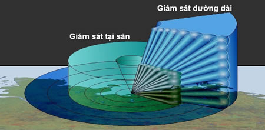
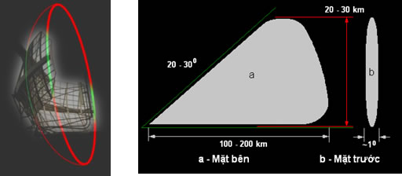
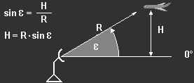
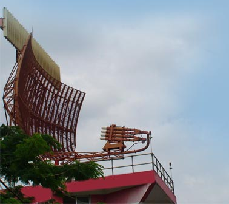

TRAC 2000 - GIỚI THIỆU CHUNG |
RADAR GIÁM SÁT SƠ CẤP PSR (PRIMARY SURVEILLANCE RADAR) |
GIẢN ĐỒ HƯỚNG CỦA ANTEN RADAR SƠ CẤP |
 Dạng cánh sóng như vậy có thể được tạo ra nhờ anten parabol với gương (mặt) phản xạ được “cắt” từ gương phản xạ parabol tròn xoay. Mặt phản xạ này có kích thước đủ rộng trong mặt phẳng ngang để tạo ra búp sóng hẹp và đủ hẹp trong mặt phẳng đứng để tạo ra búp sóng rộng theo các mặt phẳng tương ứng. 
|
Để vừa đo được phương vị của mục tiêu, vừa có thể giám sát đồng thời toàn bộ dải độ cao (góc tà) tại phương vị này, giản đồ hướng (cánh sóng) của anten radar sơ cấp cần có dạng hẹp (hình bút chì) trong mặt phẳng ngang và rộng (hình quạt) trong mặt phẳng đứng. Anten được quay với tốc độ nhất định để quan sát toàn bộ vùng không gian quanh đài radar.
|
| Cánh sóng hình “cosec bình phương”:  |
Một yêu cầu quan trọng đối với radar sơ cấp để nâng cao chất lượng xử lý tín hiệu là phải đảm bảo cường độ tín hiệu phản xạ ở đầu vào máy thu đồng đều khi mục tiêu chuyển động với độ cao không thay đổi. Hình dạng cánh sóng trong mặt phẳng đứng của anten cần phải được tính toán đặc biệt để đáp ứng yêu cầu này. |
| Công suất tín hiệu phản xạ tại đầu vào máy thu Pt quan hệ với hệ số tác dụng định hướng của anten G và cự ly tới mục tiêu R theo biểu thức Pt ~ G/R4. Để giữ cho Pt = const thì G ~ R hay G ~ R. Thay giá trị của R được tính theo độ cao H và góc tà ε của mục tiêu như trên hình vẽ sẽ có quan hệ sau: G ~ (H / sinε) = (H . cosecε). Khi H = const sẽ nhận được G ~ cosec ε. Như vậy, cánh sóng của radar sơ cấp trong mặt phẳng đứng cần có dạng “cosec bình phương”. Anten với cánh sóng như vậy cho phép phân bố hợp lý năng lượng phát xạ trong độ rộng cánh sóng nhằm đảm bảo điều kiện quan sát mục tiêu tốt nhất. Dạng cánh sóng “cosec bình phương” là phương tiện để đạt được cường độ tín hiệu ở đầu vào máy thu như nhau khi mục tiêu chuyển động với độ cao không thay đổi trong phạm vi độ rộng của cánh sóng. |
|

Phương pháp tạo cánh sóng “cosec bình phương”:

|
Ví dụ:
|